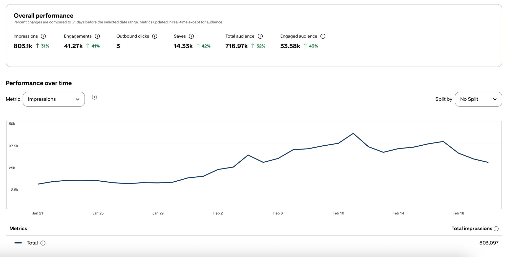
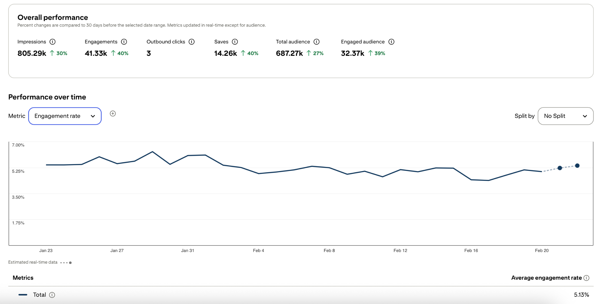
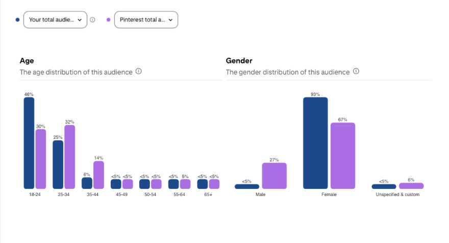
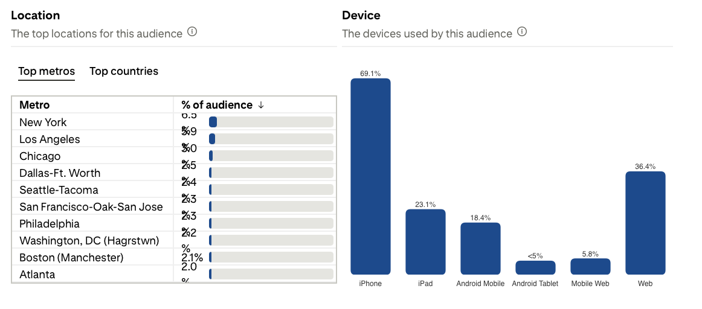
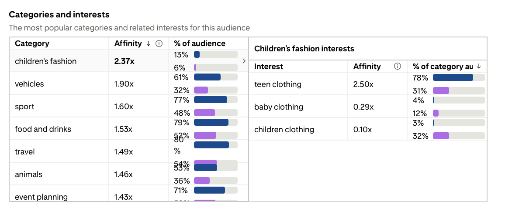
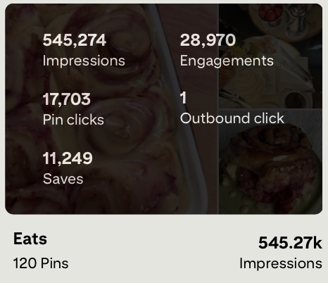
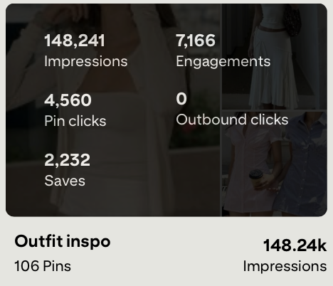
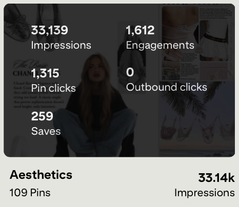

Exploring how creative design decisions, keywords, and posting patterns influence engagement and long-term content growth on Pinterest.
Pinterest is often treated as a simple inspiration platform where users casually save content. However, when viewed through a product and analytics lens, the platform reveals deeper patterns about how visual design, timing, and content strategy influence engagement.
This project explores Pinterest from a product strategy perspective. Instead of simply posting content, I approached the platform as a system that can be measured, tested, and iterated on. By analyzing performance metrics and tracking content over time, I aimed to understand which design choices and content themes lead to consistent growth.
The project combines creative experimentation with data analysis to understand how platforms reward certain behaviors and visual patterns.
To understand how consistency affects performance, I tracked key analytics metrics across a 30-day period of regular posting. Instead of focusing on individual viral posts, the goal was to evaluate overall system performance.
Metrics such as impressions, saves, engagements, and audience growth were monitored daily to identify patterns between posting frequency and reach.
Impressions
Engagements
Saves
Engaged Audience

Looking at analytics over time provided deeper insight than analyzing single posts. While individual posts occasionally performed better than others, the broader trend showed that consistent posting gradually increased impressions and engagement.
Interestingly, engagement rate remained relatively stable even when posting frequency changed. This suggests that the content direction itself resonated with the audience rather than growth being driven purely by volume.

Understanding audience demographics helped clarify who interacts with the content and how they engage with the platform.
Pinterest analytics showed that the majority of viewers were between 18 and 24 years old and primarily accessed content through mobile devices. This insight influenced design decisions such as vertical layouts, simple typography, and strong visual contrast for smaller screens.


Analyzing category affinity helped identify what topics the audience was naturally drawn toward. Fashion, travel, food, and lifestyle consistently appeared as the strongest engagement drivers.
These insights helped guide future content creation by focusing on themes that already showed evidence of traction.

Instead of evaluating only individual posts, I analyzed board-level performance to understand long-term growth patterns. Boards act as content clusters that help Pinterest’s algorithm categorize and distribute posts.

545k+ impressions · 28k+ engagements · 11k+ saves

148k+ impressions · 7k+ engagements · 4.5k+ clicks

33k+ impressions · 1.6k+ engagements
This project reinforced how creative platforms can be analyzed using the same thinking applied to product systems. Instead of viewing content creation as purely artistic, it becomes possible to treat it as an iterative process informed by data.
Through this project I strengthened my ability to connect design decisions to measurable outcomes, analyze audience behavior, and adjust strategies based on evidence rather than intuition alone.